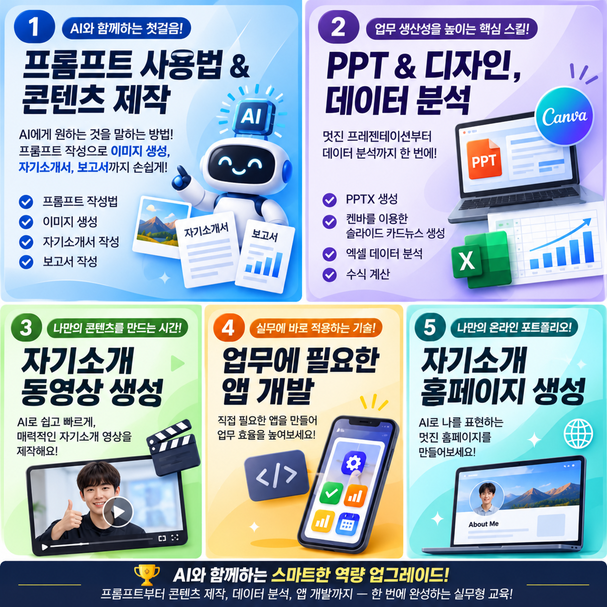

침착하게 점검
문제가 생기면 연결 상태와 원인을 순서대로 살펴봅니다.
READY TO LEARN · 2026
한국기술부사관고등학교 졸업예정자 김X호입니다.
전기기능사 실습에서 익힌 꼼꼼함과 침착함으로
생산 현장의 기본부터 차근차근 배우겠습니다.

01 / ABOUT ME
전기기능사 시험을 준비하며 입선과 결선 실습을 했습니다. 작업이 예상대로 되지 않았을 때 연결 상태를 차분히 점검하고 잘못된 부분을 바로잡아, 제한 시간 안에 작업을 마무리했습니다.
실습과 협업 경험을 통해 익숙한 일일수록 다시 확인하는 태도와, 안전을 기준으로 의견을 모으는 방법을 배웠습니다. 생산 현장에서도 절차를 먼저 익히고 정확하고 꾸준하게 맡은 일을 수행하겠습니다.
경험으로 확인하기 ↘문제가 생기면 연결 상태와 원인을 순서대로 살펴봅니다.
익숙한 작업도 한 번 더 확인해 완성도를 높입니다.
서로의 의견을 듣고 공동의 목표에 맞춰 역할을 나눕니다.
02 / EXPERIENCE
실습에서 마주한 문제를 확인하고,
동료와 안전한 해결 방법을 찾았습니다.
01 — PROBLEM SOLVING
입선과 결선 실습 중 작업을 마친 뒤 작동하지 않는 문제를 발견했습니다. 남은 시간을 확인하고 연결 상태를 살펴 잘못된 부분을 바로잡았습니다.
02 — TEAMWORK & SAFETY
완성품 해체 방법에 의견 차이가 생겼을 때 실습 순서와 공구 사용법을 다시 확인했습니다. 역할을 나누어 안전하게 해체하고 부품을 정리했습니다.
학교 실습에서의 개인 역할과 결과를 바탕으로 작성했습니다.
03 / WHAT I’VE LEARNED
직접 경험한 실습과 학습 내용을 담았습니다.
자격 취득 · 입선 및 결선 실습
AI 프롬프트를 활용한 함수와 차트 학습
작업 순서와 공구 사용법을 확인하며 협업

학습 과정 한눈에 보기 ↗04 / PROJECTS
용어사전 JSON은 테스트용 가상 설명입니다. 실제 정비·설계 판단에 사용하지 않습니다. 프로젝트 소개는 제공된 파일을 연결한 자료 안내이며, 미확인 작업 내용이나 성과를 추가하지 않았습니다.
05 / SAFE WORK
현장 안전 포스터를 통해
작업 전 확인의 중요성을 되새깁니다.
07 / NEXT STEP
입사 후에는 작업 절차와 안전수칙을 먼저 익히고 선배들의 작업 방법을 배우겠습니다. 맡은 업무를 꾸준히 반복해 숙련도를 높이고, 문제가 생기면 침착하게 확인해 품질과 생산 일정에 보탬이 되겠습니다.